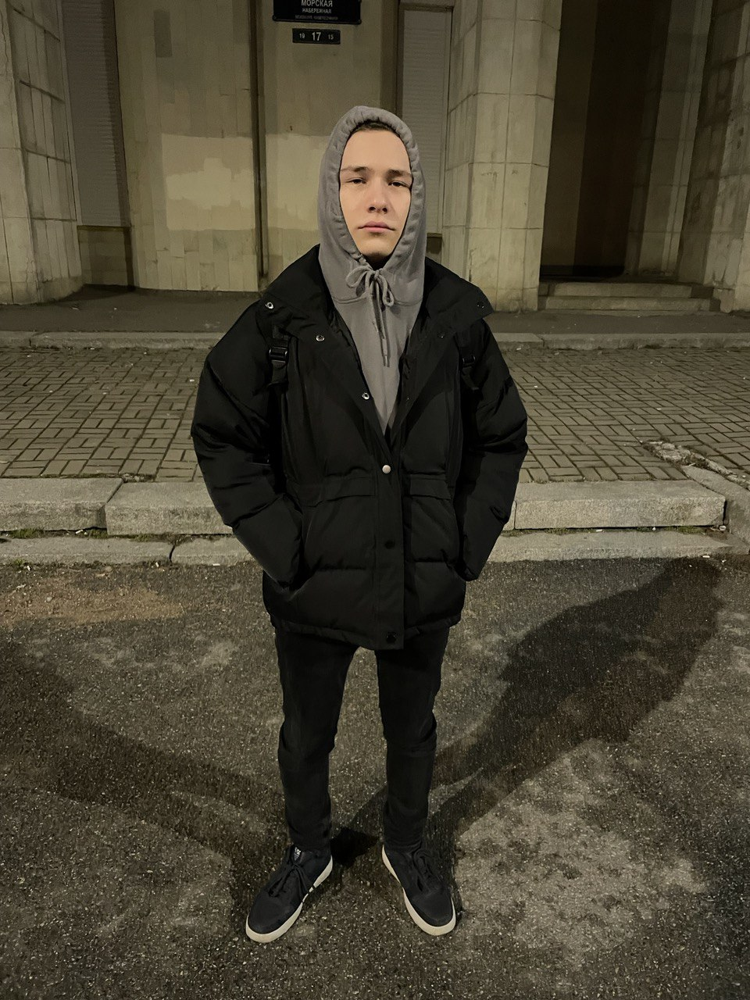
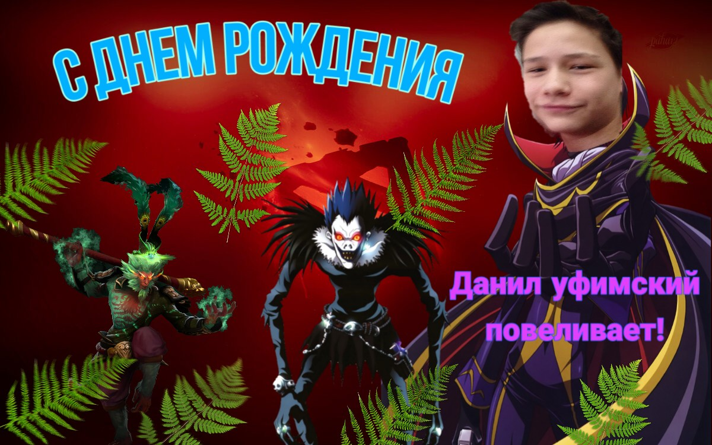
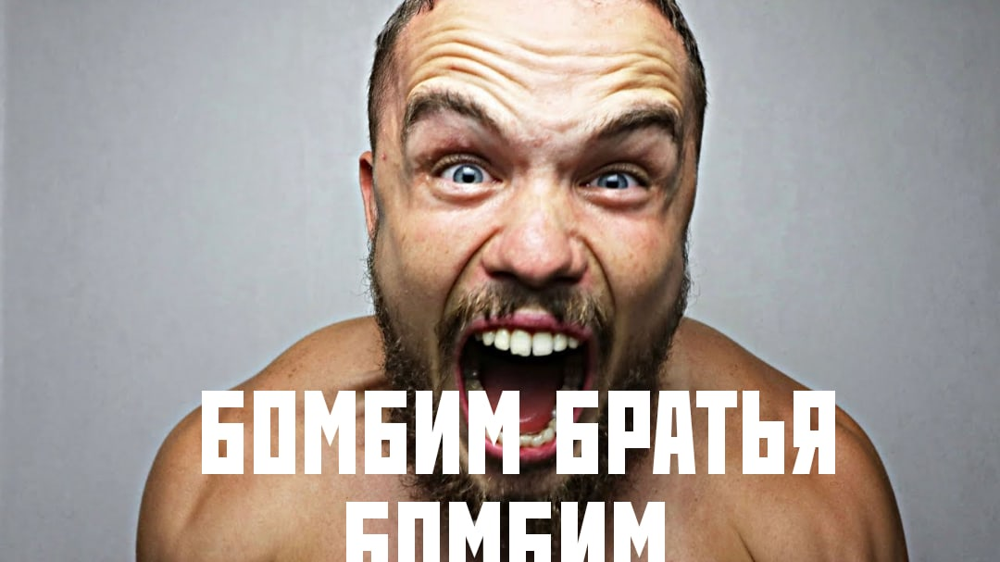

С ДНЕМ РОЖДЕНИЯ!!!!!
Это тебе напоминалка с кем будут иметь дело твои обидчики
Фоточки моего любимого мурлока



Дальше я напомню тебе парочку своих прошлых поздравлений
2020 год


А дальше 2018.........
Данил я тебя поздравляю с этим крутым праздником. Тебе уже 14 лет и это меня пугает. Я тебе говорил что моя мечта связана с футболом но это не так. Моя мечта чтобы мы с тобой остались в этом времени. Когда можно часто гулять орать с мемасов и тд. Ведь когда мы вырастим му не сможем так часто видеться.
У меня никогда в жизни не было такого крутого друга как ты и я уверен что не будет ни когда. Я знаю что нашей дружбе ещё много чего надо будет преодолеть но я буду стараться сохранить её такой же крепкой. Я часто замечаю что вроде мы с тобой такие разные:
Ты умный
Я тупой
Ты сильный
Я слабый
Ты низкий
Я пипец дыдлда
Но мы вс равно продолжаем дружить и я очень рад что знаком с тобой(и с твоей мамой)
С ДНЁМ РОЖДЕНИЯ МОЙ ЛУЧШИЙ ДРУГ ТЫ ПРАВДА ЛУЧШИЙ ЧЕЛОВЕК НА СВЕТЕ СПАСИБО СТО ТЫ ЕСТЬ!!!
Денжик с днем рождения братишка, я очень рад что снова могу писать тебе поздравления от всего сердца. блин я вообще не могу представить что тебе уже 18,
ведь мы будто только вчера с тобой шли с последнего урока и обсуждали кто чем болел и кому какие странные сны снились. Будто вчера я играл у тебя в нинтендо и кушал крылья,
собирал по дому всякий хлам и придумывал как тебя рассмешить на твое др, ждал тебя у дома по 20 минут, но говорил что только пришел, впервые попробовал с тобой шаву,
обсуждал дневник будущего, люто накидывал под бит репчину перед твоими родственниками и снимал с тобой крутые видосы для школы. И это только 1% от всего что мы с тобой делали,
и просто не верится что это было так давно. И вот тебе уже 18. Мы выросли с тобой вместе и не смотря на все то дерьмо, которое между нами было, я с уверенностью могу сказать
что ты мой самый близкий человек и скорее всего будешь таким всю мою жизнь. Я доверяю тебе, всегда к тебе прислушаюсь и всегда помогу, хотя чаще скорее ты мне помогаешь.
Я желаю тебе никогда не забывать на что ты способен и кто ты такой. Никогда не сдаваться ведь после тысячи поражений победа неизбежна. С днем рождения, мой маленький братишка.
и до вечера.